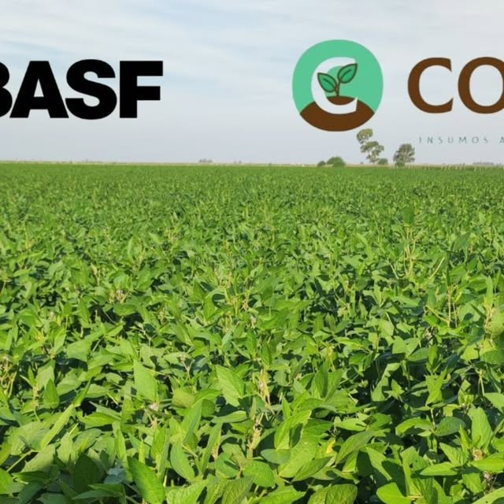
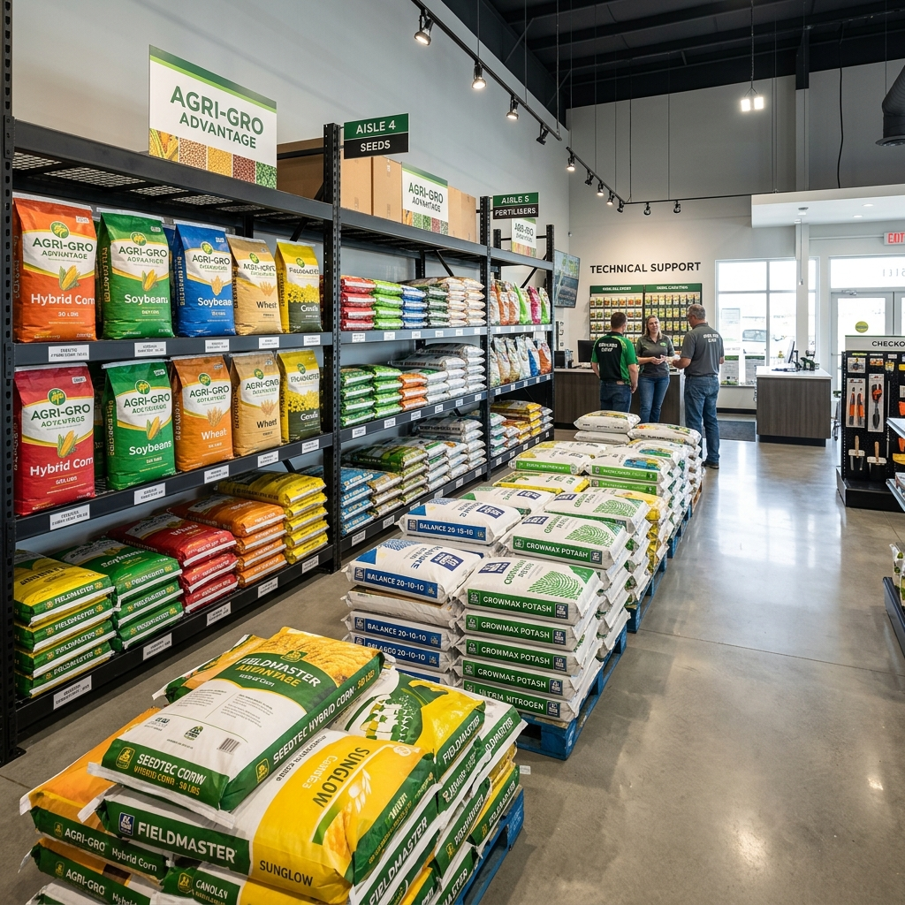
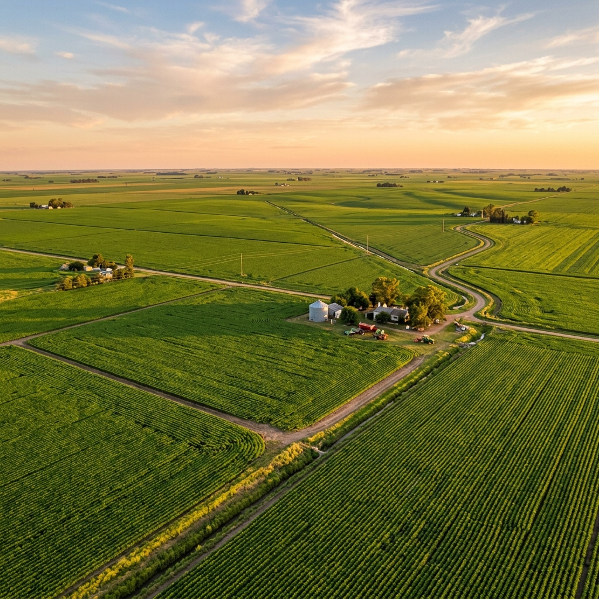

Impulsando el rendimiento de tu campo
Insumos, semillas y tecnología de aplicación de primera línea para productores en Coronel Charlone y la región.
Trabajamos con las mejores marcas:
Soluciones Integrales para tu Cultivo
Herbicidas y Defensivos
Herbicidas selectivos para trigo, soja y otros cultivos de la zona. Protección total para cada etapa del ciclo biológico.
Semillas
Venta de semillas de alta calidad para maximizar el rendimiento.


Tecnología de Aplicación
Nuevas tecnologías e insumos para optimizar las aplicaciones y el cuidado del suelo. Logre la máxima eficiencia con el menor impacto.
- check_circle Mapeo de precisión
- check_circle Insumos de baja volatilidad
¿Por qué elegir Conti Insumos?
Acompañamos al productor con tecnología de punta y asesoramiento personalizado en cada etapa del ciclo productivo.
Asesoramiento técnico a campo
Visitas constantes para monitoreo de cultivos.
Distribución de insumos agrícolas
Logística eficiente para que nunca falte nada en tu campo.
Soluciones integrales para la siembra y cosecha
Desde el tratamiento de semilla hasta el rinde final.

"Más que proveedores, somos aliados estratégicos en el crecimiento de tu producción."
Visitá nuestro local o contactanos
Encontranos en Dr. Garay N° 869, Coronel Charlone, Buenos Aires. Estamos para ayudarte a llevar tu campo al siguiente nivel.
chat Hablar por WhatsApp